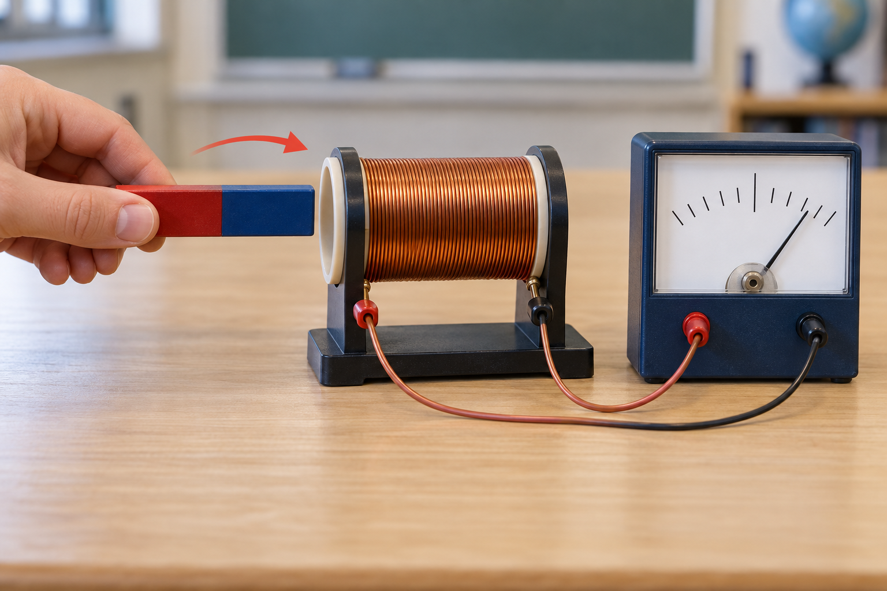

Sistemas Multi Física - Profesor Javier Pereyra
Ley de Faraday: inducción electromagnética
Un campo magnético puede producir un efecto eléctrico, pero solo si cambia el flujo que atraviesa una bobina.
1 Objetivos de aprendizaje
Distinguir un campo magnético estático de un cambio de flujo magnético.
Relacionar el movimiento relativo entre imán y bobina con la lectura de un galvanómetro.
Usar flujo magnético y ley de Faraday con unidades del Sistema Internacional.
Justificar el sentido de la respuesta inducida con la idea de Lenz.
2 La pregunta inversa a Oersted
Oersted mostró que una corriente produce campo magnético. Faraday se preguntó si podía ocurrir algo recíproco: ¿un campo magnético puede producir un efecto eléctrico? Conectó una bobina a un galvanómetro y movió un imán cerca de ella.

3 Qué muestra el experimento
Hay inducción porque cambia la situación relativa entre ambos.
También hay inducción: importa el cambio de flujo, no cuál objeto se mueve.
La aguja se desvía más: el flujo cambia en menos tiempo.
La fem inducida resulta mayor porque cada espira aporta al efecto total.
4 Flujo magnético: una medida de “cuánto campo atraviesa”
Para una espira plana de área \(A\), inmersa en un campo uniforme \(\vec B\), el flujo magnético se modela como:
\(\theta\) es el ángulo entre el campo \(\vec B\) y la normal a la superficie, no entre \(\vec B\) y el plano de la espira.
Si el campo atraviesa la espira de frente, \(\theta=0^\circ\) y el flujo es máximo. Si corre paralelo al plano, \(\theta=90^\circ\) y el flujo es cero.
| Magnitud | Símbolo | Unidad SI | Interpretación |
|---|---|---|---|
| Campo magnético | \(B\) | tesla (T) | Intensidad del campo en la zona de la espira. |
| Área de la espira | \(A\) | metro cuadrado (m²) | Superficie encerrada por una vuelta. |
| Flujo magnético | \(\Phi_B\) | weber (Wb) | \(1\,\mathrm{Wb}=1\,\mathrm{T\,m^2}\). |
| Ángulo con la normal | \(\theta\) | grado (°) | Define qué parte de \(\vec B\) atraviesa la superficie. |
5 Ley de Faraday
La fem promedio \(\mathcal E_{\mathrm{prom}}\) es la energía transferida por unidad de carga que la inducción puede proporcionar. Se mide en volt (V).
\(N\) es el número de espiras. Para calcular el módulo, usamos \(\lvert\mathcal E_{\mathrm{prom}}\rvert=N\lvert\Delta\Phi_B\rvert/\Delta t\).
6 Ejemplo resuelto: campo que aumenta
Problema: una bobina de \(N=200\) espiras y área \(A=6{,}0\times10^{-3}\,\mathrm{m^2}\) está orientada de modo que el campo la atraviesa de frente. El campo aumenta de \(0{,}10\,\mathrm T\) a \(0{,}50\,\mathrm T\) en \(0{,}20\,\mathrm s\). Calculá la fem promedio en módulo.
Datos: \(\Delta B=0{,}40\,\mathrm T\), \(\theta=0^\circ\), por lo tanto \(\cos\theta=1\).
Cambio de flujo por espira: \(\lvert\Delta\Phi_B\rvert=A\lvert\Delta B\rvert=(6{,}0\times10^{-3})(0{,}40)=2{,}4\times10^{-3}\,\mathrm{Wb}\).
Faraday: \(\lvert\mathcal E_{\mathrm{prom}}\rvert=N\dfrac{\lvert\Delta\Phi_B\rvert}{\Delta t}\).
Reemplazo: \(\lvert\mathcal E_{\mathrm{prom}}\rvert=200\dfrac{2{,}4\times10^{-3}}{0{,}20}\).
Resultado: \(\boxed{\lvert\mathcal E_{\mathrm{prom}}\rvert=2{,}4\,\mathrm V}\).
Interpretación: esos \(2{,}4\,\mathrm V\) solo corresponden al intervalo en que cambia el campo. Cuando \(B\) se estabiliza, \(\Delta\Phi_B=0\) y la fem vuelve a cero.
7 Aplicaciones: hacer variar el flujo
Una bobina gira entre imanes: cambia su orientación y, por lo tanto, el flujo. Convierte energía mecánica en eléctrica.
Una corriente alterna crea un campo variable que induce corrientes en el recipiente apto y lo calienta.
Dos bobinas cercanas intercambian energía mediante un campo variable, sin contacto metálico directo.
Al moverse un metal en un campo aparecen corrientes inducidas que amortiguan el movimiento.
8 Experiencia escolar: imán, bobina y medidor
Materiales
Una bobina de muchas vueltas de alambre, un imán de barra, cables y un galvanómetro de centro cero o multímetro en escala sensible de voltaje continuo. No requiere pila.
Procedimiento
- Conectá la bobina al medidor y registrá la lectura inicial.
- Acercá el imán de manera uniforme, detenelo dentro de la bobina y luego alejalo.
- Repetí con distinta rapidez, sin cambiar el imán ni la bobina.
- Invertí el imán y registrá el sentido de la desviación.
| Variable | Cómo se registra | Predicción |
|---|---|---|
| Independiente | Rapidez de acercamiento/alejamiento | Mayor rapidez → mayor desviación momentánea. |
| Dependiente | Máxima desviación del medidor y su sentido | El sentido se invierte al invertir el movimiento o el polo. |
| Controladas | Imán, bobina, distancia inicial y escala | Se mantienen para comparar justamente. |
9 Actividades
Mostrá datos, unidades, fórmula o justificación física. En las situaciones de Lenz, dibujá el campo inducido y explicá qué cambio intenta oponerse.
- Describí qué marca el galvanómetro al acercar un imán, detenerlo dentro de la bobina y alejarlo.
- Escribí cuatro maneras distintas de cambiar el flujo magnético de una espira.
- Completá una tabla con \(B=0{,}30\,\mathrm T\), \(A=0{,}020\,\mathrm{m^2}\) y \(\theta=0^\circ\), \(60^\circ\) y \(90^\circ\). Calculá \(\Phi_B\) en cada caso.
- Explicá por qué un imán inmóvil dentro de una bobina no mantiene una corriente inducida.
- Una espira de área \(0{,}015\,\mathrm{m^2}\) recibe perpendicularmente un campo de \(0{,}40\,\mathrm T\). Hallá el flujo.
- Una bobina de 100 espiras y área \(0{,}020\,\mathrm{m^2}\) pasa de \(B=0{,}30\,\mathrm T\) a \(B=0\) en \(0{,}10\,\mathrm s\), perpendicular al campo. Calculá la fem promedio en módulo.
- Compará dos situaciones: una bobina tiene el doble de espiras; en la otra, el mismo cambio de flujo tarda el doble. ¿Cómo varía la fem? Justificá.
- Un polo norte se acerca a una bobina. Indicá qué polo inducido aparece en la cara próxima al imán y justificá con Lenz. Repetí para cuando el norte se aleja.
- En un circuito cerrado, la fem promedio es \(3{,}0\,\mathrm V\) y la resistencia es \(6{,}0\,\Omega\). Calculá la corriente durante el cambio y explicá qué ocurre si se abre el circuito.
- Diseñá una tabla de datos para investigar cómo influye la rapidez del imán. Incluí hipótesis, variable independiente, dependiente y dos controladas.